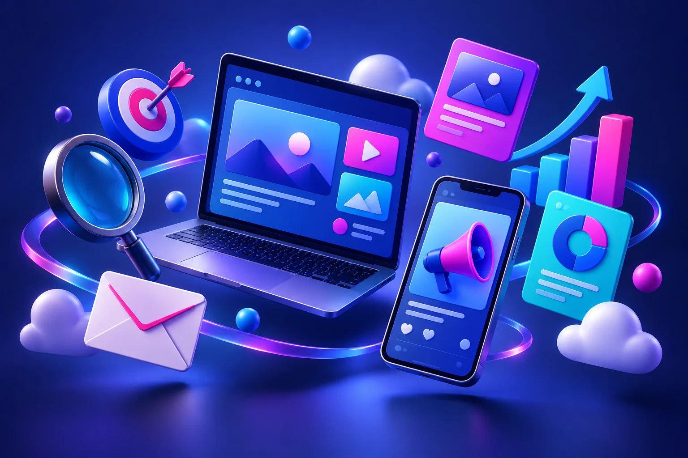
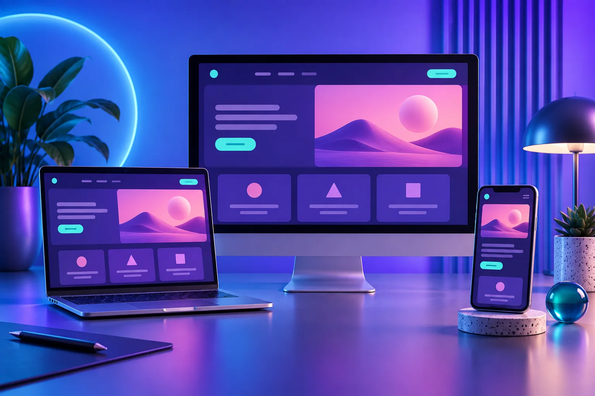

Branding
Una identidad que se reconoce y se recuerda. Definimos el posicionamiento, la personalidad y el universo visual de tu marca para comunicar con coherencia.
MARKETING DIGITAL + DISEÑO WEB
En Virtual Net Soluciones unimos estrategia, creatividad y tecnología para construir tu marca, atraer a tu público y convertir visitas en oportunidades.
Explora nuestras soluciones
01 / MARKETING DIGITAL
Conectamos los canales de tu negocio para que cada acción tenga un objetivo: hacerte visible, construir confianza o generar oportunidades.
IDENTIDAD + COMUNICACIÓN
Tu logo es solo el comienzo. Damos forma a una identidad que se expresa en tu web, tus contenidos y cada conversación con tu comunidad.
Descubre cómo trabajamos tu marcaUna identidad que se reconoce y se recuerda. Definimos el posicionamiento, la personalidad y el universo visual de tu marca para comunicar con coherencia.
Ayudamos a que tu negocio sea más fácil de encontrar en buscadores. Trabajamos la estructura técnica, las palabras clave y los contenidos según la intención de búsqueda.
Conectamos tus anuncios con búsquedas relevantes. Planificamos la segmentación, los mensajes y las páginas de destino, y ajustamos la inversión según las conversiones.
Construimos una presencia activa y consistente en los canales de tu audiencia. Planificamos publicaciones, gestionamos la comunidad y revisamos qué genera conversación.
Creamos contenido que informa, resuelve dudas y acompaña la decisión de compra: artículos, piezas visuales y guiones alineados con tu marca y tus objetivos.
Diseñamos comunicaciones relevantes para cada etapa de la relación con tus contactos: bienvenida, novedades y seguimiento, con segmentación y automatizaciones.
Transformamos las interacciones de tu web en información útil. Definimos eventos, conversiones e indicadores para entender qué canales atraen visitas y qué acciones aportan valor.
Detectamos obstáculos en el recorrido del visitante y proponemos mejoras en mensajes, formularios y llamadas a la acción. Validamos hipótesis con pruebas cuando el volumen de datos lo permite.
02 / DISEÑO WEB
Diseñamos sitios que presentan tu propuesta con claridad y guían a tus visitantes hacia el siguiente paso. Tu marca, tu contenido y tus objetivos en una experiencia coherente.

03 / NUESTRO MÉTODO
Sin fórmulas mágicas. Un proceso claro, conversación abierta y decisiones con fundamento.
Analizamos tu marca, tu web y tus canales. Definimos a quién quieres llegar y qué objetivo necesita prioridad.
Conectamos branding, diseño web y los canales adecuados: SEO, SEM, redes, contenido o e-mail. Cada acción tiene un papel en el plan.
Lanzamos las acciones y revisamos los indicadores. La analítica y el CRO nos ayudan a priorizar mejoras con evidencia.
04 / TU PRÓXIMO PASO
Elige tu prioridad y descubre un punto de partida.
TU PUNTO DE PARTIDA / VISIBILIDAD
Empieza por una identidad clara y una web fácil de encontrar. Combina branding, optimización SEO y contenido útil para presentar tu propuesta a las personas adecuadas.
Un resumen para comenzar a planificar. Se genera en tu dispositivo, sin enviar tus datos.
RESOLVEMOS TUS DUDAS
Podemos comenzar por una necesidad concreta, como tu identidad de marca o tu web, y conectar otros servicios según las prioridades y recursos de tu negocio.
El SEO trabaja la visibilidad orgánica mediante mejoras técnicas y de contenido. El SEM utiliza anuncios pagados en buscadores para llegar a búsquedas seleccionadas. Pueden complementarse dentro de una misma estrategia.
Es la optimización de la tasa de conversión: mejorar la experiencia para facilitar acciones como completar una consulta o solicitar información. Parte del análisis del comportamiento y de pruebas sobre cambios concretos.
Sí. Planteamos el diseño para distintos tamaños de pantalla, con navegación, imágenes y textos adaptados a cada dispositivo.
Primero definimos el objetivo y sus indicadores. Después revisamos tráfico relevante, interacciones, consultas o conversiones, según el caso. Los resultados dependen del punto de partida, el mercado y los recursos; no prometemos posiciones ni ventas garantizadas.